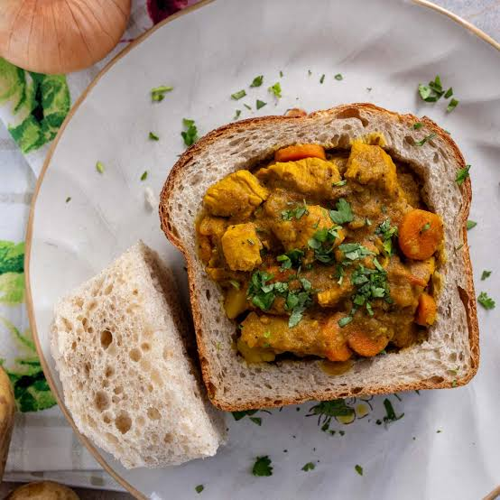

Bunny Chow
South Africa - Southern Africa

About this dish
Bunny chow comes from Durban, where the Indian South African community served curry inside a loaf of bread so workers could carry their lunch. The curry uses curry masala, cardamom and cinnamon. You eat it with your hands and dip the bread in the sauce.
Ingredients
4 servings
- 500 g chicken, cubed
- 1 large onion
- 3 cloves garlic
- 1 tbsp grated ginger
- 2 tbsp curry powder
- 2 tomatoes
- 2 potatoes, cubed
- 1 cinnamon stick
- 3 cardamom pods
- 3 tbsp vegetable oil
- 2 cups water
- 1 loaf of white bread
- 0.25 cup fresh coriander
- Salt to taste
Cooking instructions
Step 1: Preparation
- Cut the chicken and potatoes into small cubes.
- Cut the loaf into quarters and scoop out the middle, keeping the bread pieces as lids.
Step 2: Cooking
- Heat the oil and fry the cinnamon and cardamom for 1 minute, then add the onion until golden.
- Add the garlic, ginger and curry powder and stir for 1 minute.
- Add the chicken and tomatoes and cook for 5 minutes, then add the potatoes, water and salt.
- Simmer for 25 to 30 minutes until everything is soft and the sauce is thick.
- Spoon the curry into the bread and top with coriander.
| Nutrient | Amount |
|---|---|
| Calories | 560 kcal |
| Protein | 32 g |
| Carbohydrates | 62 g |
| Fat | 18 g |